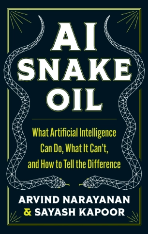
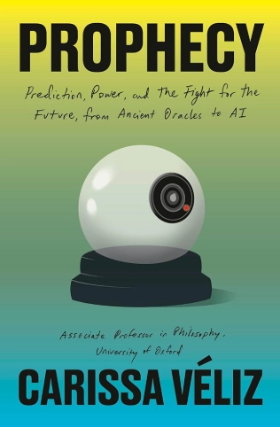

01 · Возможности
AI Snake Oil: What Artificial Intelligence Can Do, What It Can’t, and How to Tell the Difference
Что действительно умеет AI и где заканчиваются реальные возможности и начинаются обещания?
Учимся понимать AI и технологии и осознанно участвовать в разговоре об их будущем
Читаем современные книги и материалы об AI, технологиях, этике и обществе, которые обсуждают в международном профессиональном и академическом сообществе. Разбираемся в идеях, сравниваем разные точки зрения и обсуждаем, что они значат для нас и для мира, меняющегося у нас на глазах.
Каждый месяц мы читаем одну современную книгу об искусственном интеллекте, технологиях и их влиянии на общество, а затем встречаемся онлайн, чтобы обсудить её на русском языке.
Это не технический книжный клуб. Нас не столько интересует, как устроен AI, сколько то, как он взаимодействует с нами и меняет мир вокруг нас.
К каждой книге я подбираю дополнительные материалы: статьи, исследования, интервью, видео, подкасты и актуальные новости. Они помогают посмотреть на тему с разных сторон и связать идеи из книги с тем, что происходит.
Клуб для тех, кому интересно разбираться в AI и современных технологиях глубже, чем на уровне новостей, хайпа и громких прогнозов.
Не нужно работать в IT или иметь техническое образование. Достаточно интереса к теме, готовности читать на английском, задавать вопросы, слушать разные точки зрения и обсуждать на русском.
Здесь не обязательно соглашаться друг с другом. Гораздо важнее быть открытыми к разговору и постепенно формировать собственную осознанную позицию.
Что и кто стоит за технологиями, которые меняют нашу жизнь?
Мы привыкли говорить о технологиях как о чём-то, что просто появляется и меняет мир. В этом сезоне мы посмотрим, как они формируются, какие идеи, данные, человеческие решения и интересы в них заложены — и как эти технологии влияют на наши возможности, выбор и общество в целом.

01 · Возможности
Что действительно умеет AI и где заканчиваются реальные возможности и начинаются обещания?

02 · Предсказания
Что происходит, когда мы пытаемся превратить человеческое будущее в данные и прогнозы?
03 · Системы и власть
Как экономика и власть определяют, в чьих интересах работают технологические системы?
Знакомимся с книгой, автором(ами) и главными вопросами месяца. Начинаем читать и делимся первыми впечатлениями в Телеграме.
Продолжаем читать, делимся интересными мыслями, цитатами и вопросами и обсуждаем их в Телеграме.
Смотрим на тему книги шире. Я делюсь дополнительными материалами — это может быть статья, исследование, видео, подкаст или актуальная новость, связанная с книгой.
Встречаемся онлайн примерно на 90 минут: немного контекста о книге и её авторах, основные идеи и вопросы — и большая часть встречи посвящена общей дискуссии.
Между встречами продолжаем разговор, делимся находками и задаём вопросы в Телеграме.
Меня зовут Полина Винникова. У меня магистерская степень по психологии и MBA. Последние несколько лет я живу в Мексике, работаю в IT с международными командами и изучаю Responsible AI, AI Safety и Human–AI Interaction.
Я работала в AI Quality Assurance и evaluation, где занималась оценкой качества работы AI и данных для его обучения. Участвовала в AI & Democracy Hackathon и программе Stanford Ethics, Technology, and Public Policy for Practitioners, где сейчас продолжаю работу как Cohort Leader. Я также участвую в Stanford Alumni AI Book Club и пишу о Responsible AI и Human–AI Interaction.
Этот книжный клуб — мой способ делиться с русскоязычным сообществом идеями, исследованиями и материалами, с которыми я знакомлюсь благодаря участию в международном профессиональном и академическом сообществе.
Мне хочется создать пространство для людей, которым небезразлично будущее технологий и которые хотят вместе разбираться в сложных темах, задавать вопросы, обсуждать и слышать разные точки зрения.
Здесь не обязательно соглашаться друг с другом. Гораздо важнее быть открытыми к разговору, с уважением относиться к разным точкам зрения и формировать собственную осознанную позицию.
Первый сезон — пилотный формат клуба на 3 месяца. Мы начинаем в октябре и встречаемся 1 раз в месяц — в конце октября, ноября и декабря. Декабрьскую встречу запланируем с учётом новогодних праздников.
Первый сезон поможет нам вместе протестировать формат и понять, каким клуб может стать дальше.
Книги участники приобретают самостоятельно. Перед началом каждого месяца я поделюсь ссылками, где можно найти или приобрести книгу.
Если вам интересно вместе читать, разбираться, задавать вопросы и обсуждать будущее AI и технологий — присоединяйтесь к первому сезону.
ПрисоединитьсяОстались вопросы? Напишите мне — буду рада рассказать подробнее.